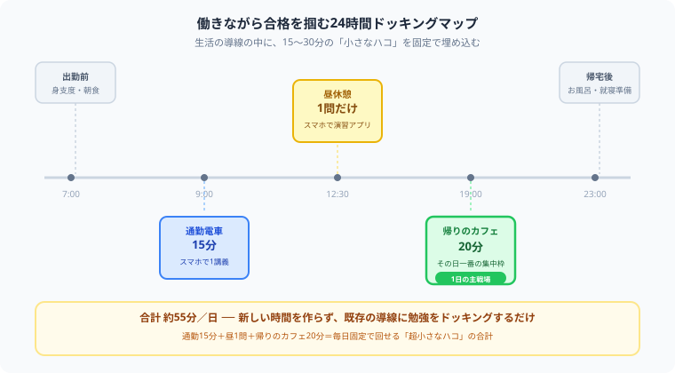

働きながら取れる資格ランキング10選｜社会人でも続けやすい資格を厳選【2026年版】
「仕事が忙しくて帰ったらクタクタ……転職や将来のために何か資格を取りたいけれど、勉強を続ける余裕なんてないよ！」と、暗い部屋でフリーズしていませんか？（笑）その感覚、僕もめちゃくちゃわかります。
僕は大学のヘビーな講義やテスト、バイトをこなしながら、毎日狂ったように公認会計士の猛勉強を両立させています。正直、根性だけで乗り切れるほど甘くありません。だからこそ僕がやっているのは、根性に一切頼らず、仕事と勉強を「日常の歯磨きレベル」で生活にドッキングさせる仕組み作りです。今日は、その視点から働きながらでも確実に取れる10の神資格と継続ハックを熱くナビゲートします！
また、記事の末尾のほうにある【いいねボタン】をポチッと押してもらえると、僕の毎日の勉強と執筆のモチベーションになるので、めちゃくちゃ嬉しいです！それでは、一緒に無理なく積み上げる方法を見ていきましょう！
選定基準
- 勉強時間が比較的読みやすい
- 独学や低コスト学習がしやすい
- 仕事・転職・実生活に活かしやすい
- 忙しい社会人でも継続のイメージを持ちやすい
働きながら取れる資格ランキング10選
社会人の最初の資格としてかなり優秀です。IT業界志望でなくても、業務のデジタル理解やリテラシーとして意味があります。勉強の重さも比較的コントロールしやすいです。
お金の知識がそのまま生活に返ってくる資格です。保険、税金、資産形成など、実生活との接続が強いので勉強の意味を感じやすく、続けやすいです。
経理や会計の入口としてかなり強いです。転職だけでなく、会社のお金の流れを理解する基礎としても役立ちます。社会人が次のキャリアを考えるきっかけにもなりやすい資格です。
ドラッグストア業界や販売職に直結しやすい資格です。実務との距離が近いので、資格を取る意味が見えやすいのが強みです。
難関資格ではないですが、事務系やPC業務の土台として取りやすいです。短期間で達成感を得やすいので、忙しい社会人が最初の成功体験を作るのにも向いています。
難易度は少し上がりますが、働きながら挑戦している人はかなり多いです。不動産業界での評価が高く、努力のリターンが比較的わかりやすい資格です。
3級より一段実務寄りで、経理や管理部門への転職を考える人にかなり相性がいいです。仕事と両立しながら狙うには重さもありますが、その分価値も大きいです。
ITパスポートより一段上です。IT転職を考えるなら十分候補になります。範囲は広いですが、段階的に積む設計がしやすい資格です。
厳密には資格ではありませんが、働きながらの学習テーマとしてかなり現実的です。英語は転職でも社内評価でも効きやすいので、目的が合えば強い選択肢です。
人事・総務系のキャリアと相性が良く、比較的短めの学習でも狙いやすいです。業務とつながる人にはかなり現実的です。
働きながら資格を選ぶときの考え方
1. 難易度より「生活に入るか」で選ぶ
平日30分〜60分で積めるか、休日頼みになりすぎないかを見ると失敗しにくいです。
2. 役立ち方が想像できる資格を選ぶ
転職、昇進、実生活、今の仕事の補強など、使い道が見えている資格の方が続きやすいです。
3. 最初から重すぎる資格を選ばない
「すごい資格」より、「続け切れる資格」から入る方が現実的です。小さな合格が次の挑戦につながります。
忙しい社会人が続けるコツ
- 毎日長くより、毎日少し触る
- 朝か通勤か夜か、時間帯を固定する
- 勉強記録を残して、進んでいる感覚を持つ
- 資格選びと同じくらい、続け方も設計する

上の図のように、出勤前・通勤往復・昼休憩・帰宅後という1日の導線の中に、勉強の小さなハコを固定で埋め込むのが大谷流です。可処分時間を新しく捻出しようとせず、すでにある導線に勉強をドッキングさせることで、意志力に頼らない習慣化ができます。
⚔ 忙しい社会人こそ、仕組みで続ける
働きながら資格を取るには、やる気より仕組みが大事です。
Study Questなら、毎日の宣言・記録・進捗の見える化をゲーム感覚で積み上げられます。
まとめ
- 働きながら取れる資格は、生活に入れやすいものから選ぶのが大切
- ITパスポート、FP3級、簿記3級は特に始めやすい
- 宅建や簿記2級はやや重いが、転職へのリターンも大きい
- 忙しい社会人は、資格選びと同じくらい続け方の設計が重要
毎日仕事でクタクタになりながらも、自分の未来のために勉強という一歩を踏み出しているあなたは、それだけで本当にすごいことをしています。僕も日々の授業やバイトの合間で必死にもがいている一人として、心からリスペクトしています。まとまった時間がなくても、スキマ時間を積み重ねれば必ず前に進めます。
ここまで読んでくれてありがとうございます！もしこの記事が役に立ったら、僕の毎日の勉強と執筆のモチベーション維持のために、この下にある【いいねボタン】をポチッと押してもらえると、めちゃくちゃ励みになります。一緒に、無理なく着実に前進していきましょう！